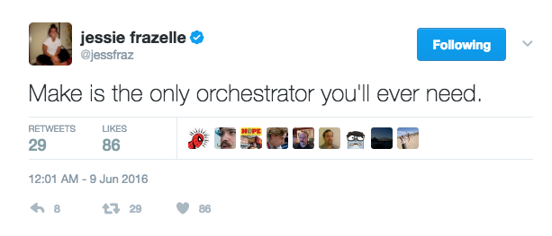

The make command has been around for decades. Predominantly, it was used to build complex projects in C & C++, but it’s seen a resurgence in the ops world for automating routine tasks and orchestration of infrastructure-as-code. In the 12-factor pattern, these are your “admin tasks”.

Because make is a very simple language, there’s not very much you need to learn to get started. Some things, however, might seem unintuitive when approaching it from the perspective of other languages. Namely, make is really a template engine that renders “stubs” and then executes those stubs in a shell. Environment variables can be considered as the arguments to those targets.
The reason for using make is that it’s supposed to be less magical. It’s such a basic language it should be hard to do something wrong. It defines every action you could possibly want to take and provides a consistent interface for calling those targets. Environment variables are used everywhere, so it’s very configurable and also 12-factor-esque.
On the other hand, something like bash is more full-featured, but suffers from some of the early criticisms of PHP. Most shell-scripts suck. They don’t check exit codes. They don’t accept arguments in consistent fashion. They don’t use environment variables. They hardcode settings. They end up looking like spaghetti.
Part of the confusion around make is that make variables (e.g. $(FOO)) resemble shell-like variables (e.g. $FOO or ${FOO}). Note, that in bash using $(....) is synonymous using ... (which will run the command).
In make, variables are synonymous to environment variables. They can be defined ad-hoc on the command line or at the top of the Makefile.
make something FOO=bar
or
Makefile:
FOO=bar
It’s important to note that everything after the = is treated literally. Thus quotes (“) are not necessary, unlike in bash.
There are many built-in functions. A few of the most common uses are explained below.
$(call foobar,arg1,arg2)
This will call a macro called “
$(shell /bin/ls)
This will run the command “/bin/ls” and output the results. Results always have new-lines & carriage returns stripped off. There’s no way around it.
$(eval FOO=bar)
This will evaluate the “FOO=bar” as “make” language formatted code. In this case, since “FOO=bar” is how a variable is defined, the result is that a variable named FOO gets set to bar in the global male namespace.
TBD
Targets are like “functions”. They can run any shell command. Those shell commands can be other scripts or apps like terraform or system commands. The make command is basically a “bash” template engine: every line of a make target is a one-line shell script. Think of the contents of a target as “stubs” or “scriptlets”.
/bin/bash`` -c “......”)There are 3 ways target names can be defined.
: - the default way. allows exactly one target to use this name. if another target attempts to use the same name, you’ll see a warning:: - this works like #1, but allows a target to be redefined in multiple places. This is nice when you want to decompose a Makefile into many sub-makefiles. e.g. deps:: is a good target to define this way, since multiple makefiles might want to define dependencies.%: - This is a wildcard. You might want to do this if you want to write one target for multiple use-cases. For example, the following example could be used to create a target that installs a brew package (e.g. make install-vim)
install-%: brew install $(subst,install-,)Targets require other targets. Just add those targets after the colon (:)
For example….
deps:
@which -s envsubst || brew install gettext
replace: deps
@envsubst < something.sh > something.txt
WARNING:
If your target name contains an escaped color (:), builds deps do not work.
The following example does not work.
example\:test:
@echo "Hello world!"
example\:broken: example:text
Workaround: call make as part of your target. This work basically the sameway, however, since it will be called in a subshell, it cannot modify the parent process environment in anyway.
example\:test:
@echo "Hello world!"
example\:broken:
@make example:text
Below are some annotated examples with explanations of what’s going on.
The basisc syntax is like this:
TMP_FILE = /tmp/test
foobar:
touch $(TMP_FILE)
rm $(TMP_FILE)
In this example, foobar is the target name. The leading spaces are all tabs (e.g. ^I)
touch /tmp/test”. If that command exits 0 (success), then it will proceed to the next line. If the command exits non-zero, it’s considered a failure and everything aborts at that point.But behind the scenes though, a lot more is happening. This is the ROOT OF ALL MISUNDERSTANDINGS.
The contents of a Makefile target are a template. Think “envsubst”, only instead of simply replacing environment variables, the template supports make syntax. The make syntax has been described above and includes variables, functions, and macros.
Let’s break down the execution of the example above.
touch $(TMP_FILE)
rm $(TMP_FILE)
Gets first rendered as a template.
The output would look like this:
touch /tmp/test
rm /tmp/test
Then, make will proceed to process the output data. Every line output is executed in it’s own shell, unless the line ends with a backslash (e.g. \). The shell is determined by the value of the SHELL variable. We usually default this to bash.
Make then executes the following
/bin/bash -c “touch /tmp/test”/bin/bash -c “rm /tmp/test”Note, by default, make will output each command run. This can be turned off by adding an @ at the beginning of the lines. This is a make-ism and nothing to do with shell. Remember, make is really just a template language.
Now that we’ve explained how commands are executed, let’s introduce a more complicated example that uses $(eval ...)
foobar:
@echo "TODAY=wednesday" > /tmp/env
$(eval -include /tmp/env)
@echo "Today is: '$(TODAY)'"
This would output:
Today is: ''
Why? Let’s re-evaluate this file the way make looks at it.
Here’s what our template looks like:
@echo "TODAY=wednesday" > /tmp/env
$(eval -include /tmp/env)
@echo "Today is: '$(TODAY)'"
Make will first render the template. It does this by first processing all make directives. These are everything in $(....).
It finds $(eval -include /tmp/env). This says to include the contents of /tmp/env into the current scope. If the file /tmp/env does not exist, it will not error and silently continue. Without the leading -, it would exit if the file does not exist (which it doesn’t in this example - readon for more details).
/tmp/env does not exist, so nothing got included. Even if it did exist, it would be from some previous execution
Then it finds $(TODAY) which is not set, so it’s evaluated to an empty string.
All $(...) processing is complete, so the rendered contents look like:
@echo "TODAY=wednesday" > /tmp/env @echo "Today is: ''"
Make proceeds to execute the contents, line by line
/bin/bash -c 'echo “TODAY=wednesday” > /tmp/env'
/bin/bash -c 'echo "Today is: \'\'"'
And finally, we see something on our terminal:
Today is: ''
Here’s another example that demonstrates how literally these templates are interpretted.
foobar:
#@echo "Hello $(shell date)"
Will first render the $(shell date) function which calls the date command and returns Thu Feb 23 07:01:14 UTC 2017, then execute the line in a sub-shell like this:
/bin/bash -c '#@echo "Hello Thu Feb 23 07:01:14 UTC 2017"'
Thus, to avoid this unnecessary execution, it’s recommend to place all comments (#) at the very beginning of the line.
foobar:
# @echo "Hello"
Here’s an example of a multi-line bash script
foobar:
@if [ -d /tmp/test ]; then \
echo "Directory exists"; \
exit 0; \
else \
echo "Directory does not exist"; \
exit 1; \
fi
Here we execute in a single bash execution, the inline script above. Note that all the line endings use a combination of ; and \ depending on context.
foobar:
@export MONTH=February
@echo $${MONTH}
This will output nothing but a new line \n because what happens is export MONTH=February is executed and exported in the first subshell, but a subshell cannot modify the environment of the parent process (make).
Then when the echo runs, we try and output ${MONTH} (in bash-syntax) and it’s empty.
Note: we escape the dollar-sign with an extra $ to avoid make from attempting to interpret it. Make always has priority since it’s preprocessing the contents of the template looking for functions and variables.
To correct this, we could instead write:
foobar:
@export MONTH=February; \
echo $${MONTH}